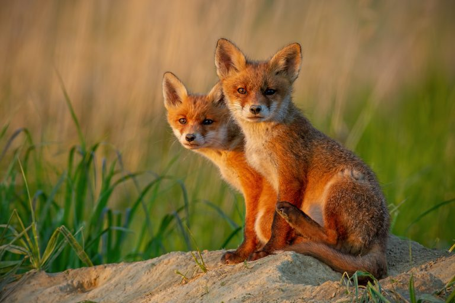

A róka a ragadozók (Carnivora) rendjén belül a kutyafélék (Canidae) családjában a rövid lábú rókák (Vulpini) nemzetség névadó neme. Rókának Magyarországon többnyire a vörös rókát (Vulpes vulpes) hívják.
Elterjedése
Az északi féltekén szinte mindenfelé előfordul; Afrikában csak a kontinens északi partvidékén. Ausztráliába betelepítették.
Megjelenése, felépítése
Mérete a kis, illetve a közepes termetű kutyákéhoz hasonló, de azoknál karcsúbb, nyúlánkabb. Koponyája hosszabb, arcorra hegyesebb a kutyákénál.
Füle nagy, farka hosszú és bozontos, pupillája függőlegesen megnyúlt elliptikus. A nőstényeknek általában hat emlője van.
Életmódja
A kutyafélék többségétől eltérően a fajok többsége helyhez kötött (állandó földalatti rejtekben, úgynevezett kotorékban él).
Fajok
A Vulpes nembe a következő fajok tartoznak:

- róka vagy bengál róka (Vulpes bengalensis)
- afgán róka (Vulpes cana)
- ezüsthátú róka (Vulpes chama)
- pusztai róka (Vulpes corsac)
- tibeti róka (Vulpes ferrilata)
- sarki róka (Vulpes lagopus)
- fakóróka (Vulpes pallida)
- homoki róka (Vulpes rueppellii)
- kitróka (Vulpes macrotis)
- prériróka (Vulpes velox)
- vörös róka (Vulpes vulpes)
- sivatagi róka (Vulpes zerda)
Forrás: Wikipedia